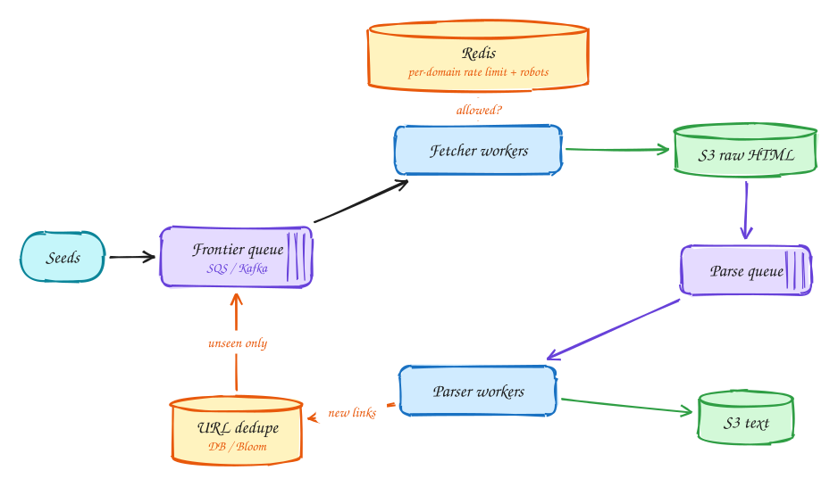

Web crawler¶
Advanced
Difficulty: Hard · Patterns: Scaling writes · DDIA: Ch 10 batch pipelines · Ch 3 Bloom filters · Ch 11 queues
Ten billion pages in five days is a pipeline problem, constrained by politeness and network bandwidth.
Tip
One-page sketchnote: WEB CRAWLER on a single page, for revision or printing.

TL;DR¶
- About 23k pages per second; size the fleet by network bandwidth, not CPU.
- Split fetching and parsing into separate stages with queues and stored raw pages, so each scales and retries on its own.
- Respect per-domain rate limits and robots.txt, and skip already-seen URLs and duplicate content.
1. Requirements¶
Functional
- Crawl from seed URLs, fetch pages, extract text, follow links
- Store text for LLM training: 10B pages in 5 days
Non-functional
- Politeness: robots.txt, per-domain rate limits
- Fault tolerant: resume without losing progress
- No duplicate URLs or content
- Efficient (network-bound)
2. Back-of-envelope numbers¶
10B ÷ 5 days ≈ 23k pages/s. × ~2MB ≈ 46GB/s, so size the fleet by network bandwidth, not CPU. Raw storage ~20PB → S3.
3. Core entities and API¶
urls(url_hash PK, url, status, last_crawled)
domains(domain, robots, crawl_delay, next_allowed_at)
internal: frontier queue messages {url, depth}
S3: raw/{url_hash}, text/{url_hash}
4. v1: the simplest design, and where it breaks¶
Put the seed URLs in a frontier queue. A pool of workers loops: take a URL, download the page, extract the text and the links, save the text, and add the new links back onto the queue.
Where it breaks: the target is 10 billion pages in 5 days, about 23k pages a second, or roughly 46 GB/s of downloads. One kind of worker doing everything hits several problems at once:
- Mixed bottlenecks: downloading waits on the network, while parsing HTML burns CPU. Each worker spends time idle on one while the other waits, so you can't size the fleet well for either.
- Fragility: if parsing crashes on a weird page, the download is wasted. If you improve the parser later, you'd have to re-download billions of pages.
- Impoliteness: nothing stops 500 workers hitting the same site at once, which gets you blocked and can take small sites down.
- Duplicates: the same URL is discovered thousands of times, and without dedup it is crawled thousands of times.
5. Evolving to the final design¶

Each step fixes one specific problem with the step before it.
Step 1: split fetching from parsing¶
Why: fetching is network-bound and parsing is CPU-bound. They need different machines in different numbers, and they fail for different reasons.
How: fetchers take URLs from the frontier, download the raw HTML, save it to S3 keyed by the URL's hash, and put a message on a second queue. Parsers read from that queue, load the HTML from S3, and extract the text and links. Each stage scales on its own, and a parser crash just retries the parse. Because the raw pages are stored, you can re-parse everything with an improved parser without crawling again.
Step 2: be polite, per domain¶
Why: websites have limits and rules. robots.txt says what you may crawl and how fast. Ignoring it gets your crawler blocked and can overload small sites.
How: for each domain, fetch and cache robots.txt in Redis, and keep a per-domain rate limit, such as a token bucket or a "next allowed fetch time". Before fetching, a worker checks the domain's limit. If it isn't allowed yet, the URL is re-queued with a delay (for example by setting the queue message's visibility timeout), and the worker moves on to a URL from another domain. Total throughput stays high while each site sees only a gentle trickle.
Step 3: deduplicate URLs and content¶
Why: popular pages are linked from millions of places, and many sites serve the same content under different URLs. Crawling duplicates wastes bandwidth and fills the dataset with repeats.
How: normalize each extracted URL (lowercase the host, remove fragments and tracking parameters, sort query parameters), hash it, and check whether it has been seen before adding it to the frontier. Use the urls table, or a Bloom filter for a fast first check. After fetching, hash the content too: identical content under a different URL (mirrors, http vs https) is stored once.
6. Deep dives¶
Why separate stages?¶
Why it's worth the complexity: the two halves have different bottlenecks (network vs CPU), different failure modes (timeouts and slow servers vs malformed HTML) and different change rates (the parser changes often, while fetching is stable).
What you get: each stage scales and retries independently, and stored raw pages make the expensive part, the crawl, a one-time cost. When you improve text extraction, you re-run only the parsers over 20 PB in S3, which is far cheaper and faster than re-crawling 10 billion pages.
Crash mid-crawl?¶
Why it matters: over 5 days and thousands of machines, workers will crash. You must not lose progress or corrupt anything.
How: a fetcher acknowledges a URL's queue message only after the raw page is safely in S3. If it crashes before that, the message becomes visible again and another worker fetches it. That's at-least-once processing. A page might occasionally be fetched twice, so make it harmless: it's stored under its URL hash, so a second fetch simply overwrites the same object (idempotent). Crawl status in the urls table lets you resume after a full restart.
Crawler traps?¶
Why they exist: some sites generate infinite URLs, like calendars with a "next month" link forever, or session IDs in every link, so a naive crawler never leaves them.
How: cap the depth and the number of pages per domain, normalize URLs so session-ID variants collapse into one, and use content hashes to notice when "new" pages are the same content again. Domains that hit the caps are flagged for review.
DNS bottleneck?¶
Why it happens: each fetch needs the domain's IP address. At 23k fetches a second, querying DNS each time overwhelms public resolvers and adds latency to every request.
How: cache DNS answers in each worker (respecting their TTLs). Most fetches go to domains already crawled recently, so the hit rate is very high. Run your own resolvers, or several, so DNS isn't a single point of failure or a rate-limited shared service.
7. Interview script (45 minutes)¶
| Time | What you do | Content |
|---|---|---|
| 0–5 | Functional requirements | Crawl from seed URLs, fetch pages, extract text, follow links; Store text for LLM training: 10B pages in 5 days |
| 5–8 | Non-functional requirements | Politeness: robots.txt, per-domain rate limits; Fault tolerant: resume without losing progress; No duplicate URLs or content; Efficient (network-bound) |
| 8–10 | Numbers that drive the design | 10B ÷ 5 days ≈ 23k pages/s. × ~2MB ≈ 46GB/s, so size the fleet by network bandwidth, not CPU. Raw storage ~20PB → S3. |
| 10–13 | Entities and API | Keep it short: the endpoints in §3, idempotency keys on writes. |
| 13–25 | v1, then evolve it | Draw v1 and show where it breaks. Then add, in order: S3 raw HTML → Parse queue → Parser workers → S3 text → Redis → URL dedupe. Justify each addition with a number. |
| 25–40 | Deep dives | Why separate stages? · Crash mid-crawl? · Crawler traps? · DNS bottleneck? |
| 40–45 | Wrap-up | Remaining bottlenecks, failure modes, what you would monitor. |
Staff-level lens¶
| Question | Staff answer |
|---|---|
| The real problem | A politeness-limited pipeline that must finish 10B pages in 5 days. |
| Deciding number | ~23k pages/s; ~46 GB/s of bandwidth; ~20 PB raw. |
| Staff call and trade-off | Separate fetch and parse stages with queues and raw pages in S3. Accept storage cost to make each stage independently retryable. |
| Raise before you're asked | Crawler traps; breaking per-domain rate limits; DNS as a bottleneck; duplicate content. |
| Senior stops at | Queue + workers. |
| Staff goes on to | Sizes the fleet by bandwidth not CPU, prices the storage, prioritises the frontier, treats robots.txt as a hard rule. |
| Run it | Watch pages/s, per-domain errors, frontier size, dedupe ratio. |
All 29 problems through this lens: Staff-level answers.
8. Common mistakes¶
- One monolithic fetch→parse loop: a slow parser stalls fetching and a crash loses in-flight work.
- Adding components before showing which number makes them necessary.
- Skipping failure handling: what happens on timeouts, retries and crashes.
Self-check¶
Try to answer before you open each one.
What limits a crawler's throughput: CPU or network?
Network bandwidth. About 23k pages a second means sizing the fleet by bandwidth.
Why separate fetching from parsing with queues?
Each stage scales and retries on its own, and stored raw pages mean a parse bug doesn't require refetching.
How do you stay polite to websites?
Respect robots.txt and per-domain rate limits, usually with a per-domain queue and delay.
Related¶
- Patterns: Scaling writes
- DDIA: Ch 10 batch pipelines · Ch 3 Bloom filters · Ch 11 queues
- Similar problems: Top-K videos (YouTube) · Ad click aggregator · Metrics monitoring (Datadog) · Fitness tracking (Strava)